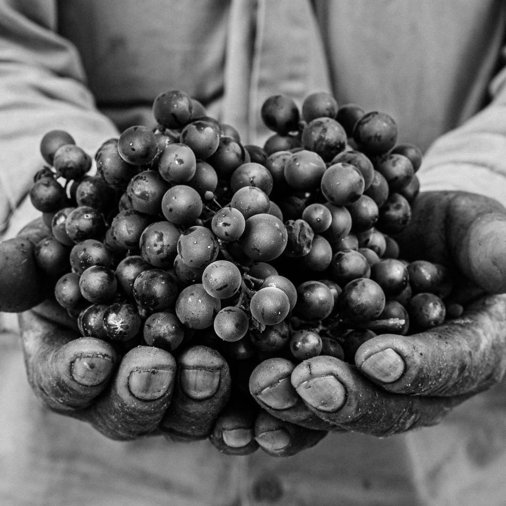
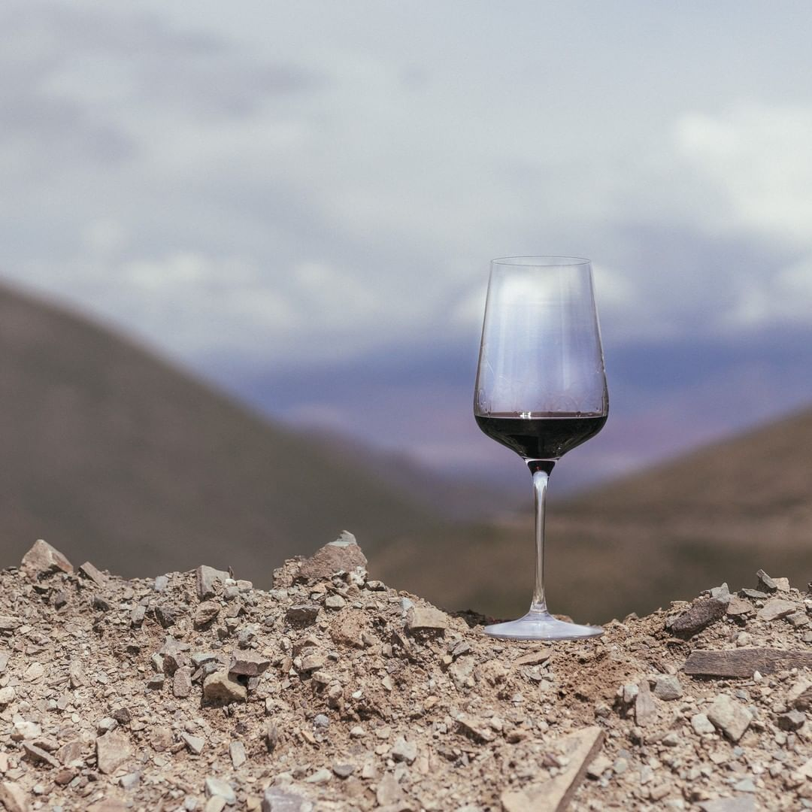
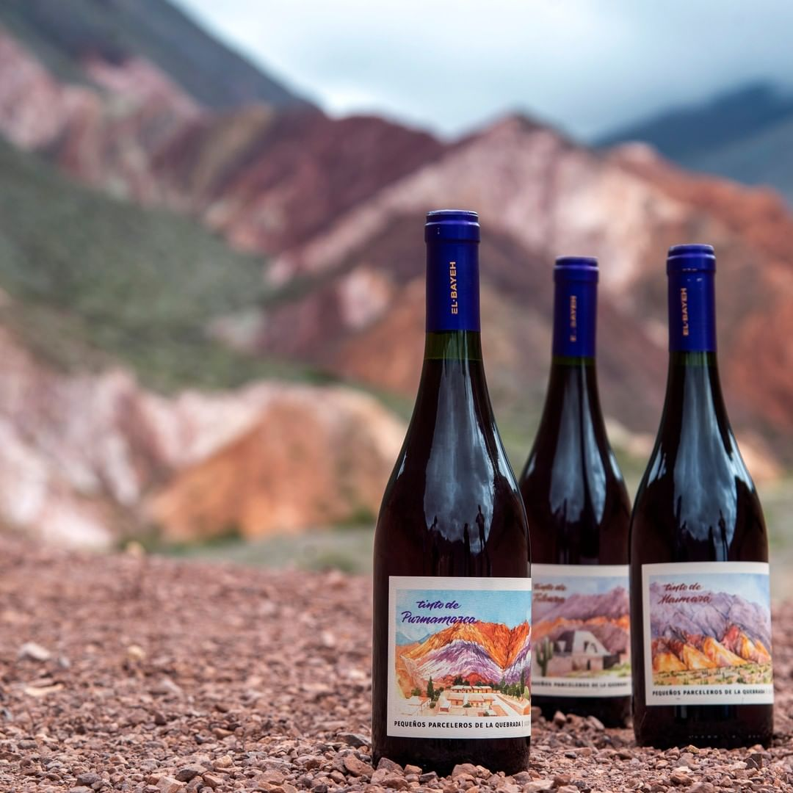

Bodegas
El Bayeh
Buscamos expresar los colores, aromas y sabores de la #QuebradaDeHumahuaca a través de vinos que comunican la esencia del terruño quebradeño
Conoce nuestros vinos
Acerca de nuestra Bodega
Uᴠᴀ sᴀɴᴀ ᴘᴀʀᴀ ᴇʟᴀʙᴏʀᴀʀ ᴠɪɴᴏs sᴀɴᴏs 🍇 En Eʟ Bᴀʏᴇʜ trabajamos con pie franco, usamos levaduras nativas, filtramos muy suavemente los vinos e intervenimos lo mínimo posible en su elaboración. Junto a @micheliniwine09 hacemos trabajos con poca intervención y mucho sentido de terruño: nuestros vinos son fieles expresiones de su lugar de origen
Hacemos vinos que hablan del cielo, de la cercanía con el sol, de los días calurosos y las noches frías, de los suelos arcillosos y pedregosos. Hacemos vinos que cuentan la historia del aire más puro, de la aridez extrema, de los colores de los cerros y de las culturas que habitan esta tierra.
Hacemos vinos de entorno, que reflejan la emoción que despiertan los paisajes de la Quebrada de Humahuaca🌵 Buscamos transmitir la belleza de este terruño con todos sus atributos: mineralidad, altitud, nitidez, policromía, pureza, austeridad, el frío de la noche y el sol del día. Esto es posible por el trato limpio que se hace en la viña y la mínima intervención que tienen mostos y vinos en la bodega. En definitiva, por el respeto que tenemos hacia nuestro terruño.

VEN A
VISITARNOS
Reserva tu visita
PHONE
(255) 352-6258
DIRECCION
5678 Extra Rd. #123 San
Francisco, CA 96120.